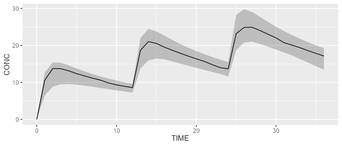
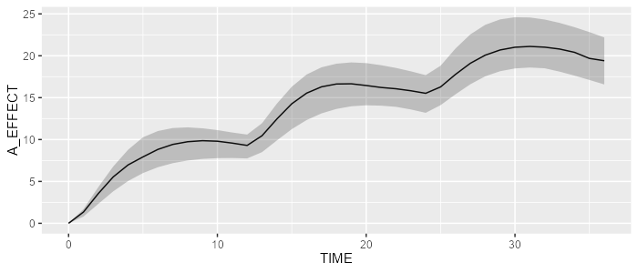

This vignette shows how a model can be appended to another. This is particularly useful when appending a PD model to a existing PK model. In this vignette, we’ll demonstrate how an effect compartment model can be appended to a 2-compartment model.
Load your base PK model
The following code will load our reference 2-compartment PK model.
pk_model <- model_suite$pk$`2cpt_fo`Load an effect-compartment model
The effect-compartment model can be loaded from the model library as follows:
pd_model <- model_suite$pd$effect_cmt_model
pd_model## [MAIN]
## KE0=THETA_KE0*exp(ETA_KE0)
##
## [ODE]
## PK_CONC=10
## d/dt(A_EFFECT)=KE0*(PK_CONC - A_EFFECT)
##
##
## THETA's:
## name index value fix
## 1 KE0 1 0.25 FALSE
## OMEGA's:
## name index index2 value fix type same
## 1 KE0 1 1 15 FALSE cv% NA
## SIGMA's:
## # A tibble: 0 × 0
## No variance-covariance matrix
##
## Compartments:
## A_EFFECT (CMT=1)This PD model has a variable PK_CONC, that needs to be
linked with the PK concentration.
Therefore, we need to adapt it as follows:
Append PD model to PK model
Appending the PD model to the PK model is done using the
add function:
## [MAIN]
## TVKA=THETA_KA
## TVVC=THETA_VC
## TVVP=THETA_VP
## TVQ=THETA_Q
## TVCL=THETA_CL
## TVPROP_RUV=THETA_PROP_RUV
##
## KA=TVKA * exp(ETA_KA)
## VC=TVVC * exp(ETA_VC)
## VP=TVVP * exp(ETA_VP)
## Q=TVQ * exp(ETA_Q)
## CL=TVCL * exp(ETA_CL)
## PROP_RUV=TVPROP_RUV
## KE0=THETA_KE0*exp(ETA_KE0)
##
## [ODE]
## d/dt(A_ABS)=-KA*A_ABS
## d/dt(A_CENTRAL)=KA*A_ABS + Q/VP*A_PERIPHERAL - Q/VC*A_CENTRAL - CL/VC*A_CENTRAL
## d/dt(A_PERIPHERAL)=Q/VC*A_CENTRAL - Q/VP*A_PERIPHERAL
## PK_CONC=A_CENTRAL/VC
## d/dt(A_EFFECT)=KE0*(PK_CONC - A_EFFECT)
##
## [ERROR]
## CONC=A_CENTRAL/VC
## if (CONC <= 0.001) CONC=0.001
## IPRED=log(CONC)
## W=PROP_RUV
## Y=IPRED + W*EPS_RUV_FIX
##
##
## THETA's:
## name index value fix
## 1 KA 1 1.00 FALSE
## 2 VC 2 60.00 FALSE
## 3 VP 3 10.00 FALSE
## 4 Q 4 2.00 FALSE
## 5 CL 5 3.00 FALSE
## 6 PROP_RUV 6 0.10 FALSE
## 7 KE0 7 0.25 FALSE
## OMEGA's:
## name index index2 value fix type same
## 1 KA 1 1 25 FALSE cv% NA
## 2 VC 2 2 25 FALSE cv% NA
## 3 VP 3 3 25 FALSE cv% NA
## 4 Q 4 4 25 FALSE cv% NA
## 5 CL 5 5 25 FALSE cv% NA
## 6 KE0 6 6 15 FALSE cv% NA
## SIGMA's:
## name index index2 value fix type
## 1 RUV_FIX 1 1 1 TRUE var
## No variance-covariance matrix
##
## Compartments:
## A_ABS (CMT=1)
## A_CENTRAL (CMT=2)
## A_PERIPHERAL (CMT=3)
## A_EFFECT (CMT=4)Simulate our PK/PD model
Let’s now simulate our PK/PD model:
library(campsis)
dataset <- Dataset(25) %>%
add(Bolus(time=0, amount=1000, compartment=1, ii=12, addl=2)) %>%
add(Observations(times=0:36))
results <- pkpd_model %>% simulate(dataset=dataset, seed=1)
shadedPlot(results, "CONC")
shadedPlot(results, "CONC")

PK concentration
shadedPlot(results, "A_EFFECT")

Showing the delayed effect